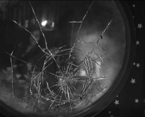

Era hora de levantar. Lá fora, o dia seguia igual a sempre, chovendo daquele jeito chato com a neblina grudada nas janelas, pesando o ar. Tudo dava a sensação de que o mundo também tava cansado, e eu não estava muito diferente.
Me mexi devagar na cama, me enrolando mais um pouco no cobertor, fingindo que ainda dava pra ignorar o tempo passando.
Eu não queria levantar.
Não queria começar mais um daqueles dias em que tudo parece meio fora de lugar.
Mas foi aí que ouvi. Um sussurro baixo, mas direto. Ele dizia o óbvio: que eu não tinha escolha. Que não tinha pra onde correr. Que ficar ali fingindo não ia mudar nada.
Aquela voz arranhada foi entrando na minha cabeça como fumaça. E como se meu corpo não fosse mais meu, eu simplesmente levantei. Resmungando, claro. Sentei na beira da cama, passei a mão no meu cabelo todo bagunçado, o mesmo ritual de sempre. E fui me arrastando até o banheiro, como um zumbi prestes a começar mais um dia sem alma.
Escovei os dentes devagar, prestando atenção demais na escova indo e voltando, tentando me agarrar à sanidade por um fio. E foi nesse momento, enquanto olhava meio distraída pro espelho, que aconteceu.
Do lado direito do meu reflexo… tinha alguém. Uma figura. Os olhos dele eram completamente apagados, sem vida, e mesmo assim pareciam me enxergar de um jeito que doía. A imagem dele não tava só no vidro. Era como se ele estivesse ali, bem ali, respirando no mesmo ar que eu.
O banheiro ficou pesado. A respiração dele era funda, lenta e sufocante. Ele esticou a mão e tocou meu cabelo. O toque era gelado, horrível. Meu corpo inteiro se encolheu com o espasmo violento de quem leva um choque. Um arrepio subiu pela minha espinha e ficou ali, tremendo por dentro. Eu queria que ele parasse. Eu queria gritar. Mas fiquei quieta
Assim que terminei de escovar os dentes, ele simplesmente sumiu. Se desfez na sombra tão completamente que era fácil duvidar que ele estivera ali.
Fiquei ali parada por um tempo, olhando o nada. Depois me despi, entrei no chuveiro e deixei a água fria cair em mim. E não era só fria, era cortante, mas estranhamente boa. Meio que me puxou de volta, me fez lembrar que eu ainda tava ali. Viva, ou algo perto disso.
Quando saí, me sequei devagar e fui me vestir, passo por passo, e cada gesto era um exercício de foco.
Olhei de novo pro espelho, e tinha alguma coisa errada ali. O reflexo ainda era meu, mas parecia longe, distante. Como se não fosse eu de verdade. Como se eu estivesse assistindo a mim mesma de fora, sem conseguir entrar de volta. Minha garganta apertou, meus olhos embaçaram, e antes que eu percebesse, as lágrimas já tavam escorrendo. Silenciosas, como quem tem vergonha de existir. Mas traiçoeiras, como quem te derruba quando você mais tenta ficar de pé.
Foi aí que ela apareceu de novo.
Mais uma sombra atrás de mim. A mesma presença gelada de sempre. Só que dessa vez, os olhos pálidos vinham acompanhados de um sorriso, um sorriso torto e nojento. Ele ria. Ria da minha cara, das minhas lágrimas, da minha fragilidade toda exposta ali no banheiro. Transformando minha dor em um espetáculo para seu deleite.
De repente, senti aquela mão gelada cobrindo minha boca. A pele dele era fria e áspera, e o toque me calou. Meu choro virou só um som abafado no fundo da garganta. Ele me forçou a olhar pra ele, e a ordem não dita era clara: "não desvia, encara". E eu tentei resistir, mas perdi.
Foi como se os olhos dele me puxassem. E puxaram mesmo, direto pra dentro de lembranças que eu passei a vida tentando esquecer.
Veio tudo.
As palavras, os gritos, os silêncios. As promessas quebradas. A mentira escancarada. Eu senti meu estômago se virar do avesso. Cada cena doía com a mesma intensidade crua de quem revive a experiência.
Ele mentiu pra mim.
Num impulso cego, movida por uma raiva que veio de um lugar que nem sei onde fica, eu fechei o punho e soquei o espelho. Sem pensar. O barulho do vidro quebrando ecoou no banheiro, um estrondo que pareceu detonar o silêncio. Estilhaços voaram pra todo lado, e minha mão virou carne viva. O sangue começou a escorrer rápido, pingando no chão gelado. Ardia. Mas doía menos que todo o resto.
Eu olhei ao redor, ofegante. A figura desaparecera, me deixando sozinha, com minha dor e meu sangue.
Olhei ao redor, tremendo. A figura tinha sumido.
Claro que tinha, sempre some depois de deixar o estrago.
E eu fiquei ali, só eu, minha mão sangrando, meu peito doendo, e o gosto metálico do desespero na boca.
Respirei fundo, tentando puxar o ar que parecia não caber mais nos pulmões. Peguei os produtos de limpeza e comecei a tirar o sangue, os cacos, tudo. Cada movimento ardia, mas eu fazia mesmo assim. Nem sei se por teimosia ou porque já tô acostumada a limpar minha própria bagunça.
Quando terminei, enrolei umas ataduras velhas no braço e na mão. Improvisei igual sempre.
O sangue ia parar uma hora ou outra.
Mas a dor ficaria, e eu sabia disso.
Saí do banheiro meio zonza, com a toalha pendurada no ombro e a mão latejando sob a atadura improvisada. Caminhei até a sala, sem pressa, meus pés parecendo feitos de chumbo. Quando cheguei, me larguei no tapete, ali mesmo, no chão frio, encostada no sofá. Desabei. As lágrimas vieram de novo, sem barulho, só escorrendo com a naturalidade de algo que já era parte da rotina.
Ninguém me ouvia.
Ninguém me via.
Ninguém tava ali comigo.
Ninguém… exceto minha cabeça.
E ela sempre fazia questão de me obrigar a engolir o choro.
E então, num contraste violentamente abrupto, veio o grito.
"MISKAaaaaaaaaaaaaaa!!! CHEGAMOOOOOOOU, SUA LERDAAAA!"A voz da Ashley atravessou a porta e provavelmente metade do bairro também. Alta, animada e escandalosa, do jeitinho dela. Ela batia na porta com a intensidade de quem quer arrancá-la do lugar. O que, sinceramente, não me surpreenderia se um dia acontecesse.
Sim, eu tinha combinado com eles. Mais uma daquelas ideias malucas de última hora que viram rolê épico do nada. Eles sempre apareciam assim, do nada, me puxando da lama sem nem saberem o quanto eu tava atolada. Eu hesitei de novo, claro. Sempre hesito. Mas no fim... sempre acabo indo.
E quer saber? Nem me arrependo.
Eles são tudo que eu tenho de luz nesse caos que minha cabeça virou.
Um pedacinho de normalidade.
Eu precisava deles. Mais do que jamais conseguiria admitir em voz alta.
Retornar